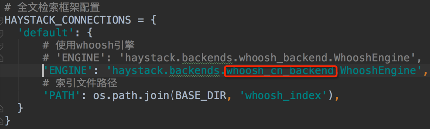

更改分词方式
- 1.安装jieba分词包。
pip install jieba - 2.进入虚拟环境dailyfresh下的haystack目录。
/home/python/.virtualenvs/dailyfresh/lib/python3.5/site-packages/haystack/backends/ 3.在上面的目录中创建ChineseAnalyzer.py文件。
import jieba from whoosh.analysis import Tokenizer, Token class ChineseTokenizer(Tokenizer): def __call__(self, value, positions=False, chars=False, keeporiginal=False, removestops=True, start_pos=0, start_char=0, mode='', **kwargs): t = Token(positions, chars, removestops=removestops, mode=mode, **kwargs) seglist = jieba.cut(value, cut_all=True) for w in seglist: t.original = t.text = w t.boost = 1.0 if positions: t.pos = start_pos + value.find(w) if chars: t.startchar = start_char + value.find(w) t.endchar = start_char + value.find(w) + len(w) yield t def ChineseAnalyzer(): return ChineseTokenizer()- 4.复制whoosh_backend.py文件为如下名称。
whoosh_cn_backend.py - 5.打开whoosh_cn_backend.py，引入中文分析类，内部采用jieba分词。
from .ChineseAnalyzer import ChineseAnalyzer - 6.更改whoosh_cn_backend.py文件中使用的词语分析类。
查找 analyzer=StemmingAnalyzer() 改为 analyzer=ChineseAnalyzer() - 7.修改settings.py文件中的配置项。 
- 8.重新创建索引数据。
python manage.py rebuild_index